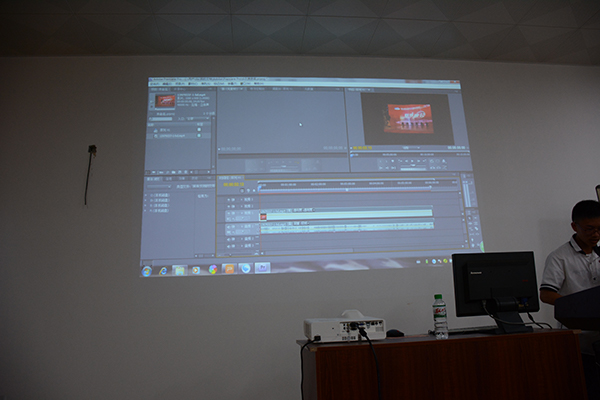
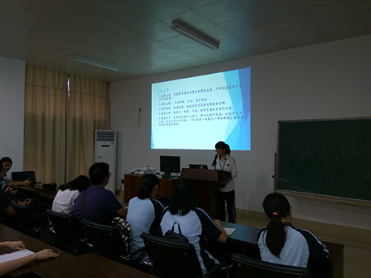

怀揣三中之梦，我们将高中生活定在崭新五象；流年似水，转眼间我们即将走过高中生活的三分之一。短短一载，我们却已在这里留下太多太多的感动与不舍。在这春意盎然的五月，南宁三中五象校区筹划了以“五象印记，悦动心间”为主题的校园微电影拍摄比赛，我们南宁三中IT协会（五象校区）为了提高大家对微电影制作的认识，制作出更精美的微电影，与文学社联动，于2017年5月10日在会议室开展了“微电影制作”的讲座。
当日到场人数达几十人，基本上每个班都派了若干代表来旁听学习，还有物理组的刘珑老师到现场捧场，真是开心如POI。
演讲分为三个部分，第一部分是文学社同学的“有关剧本编写”的演讲，两位文学社同学从剧本的定义、叙事的手法和常见的错误等全方面地向大家讲述“一个好剧本是怎么炼成的”，更新了大家对剧本编写的观念。有可能一位未来的有名编剧就在我们之中诞生。（不存在的）
第二部分是关于拍摄器材的选择的演讲，我们特地邀请了擅长摄影的炮摄杨淙瀚同学，让他向大家分享经验。杨淙瀚同学从摄影设备说起，介绍了DV机，微单，单反和智能手机四种设备，通过讲述各种设备的成像原理向大家分析了各种设备的优点与缺点，在场的小伙伴们都惊呆了，原来DV机才是微电影拍摄的首选啊！接着他又介绍了一些别的工具，如斯坦尼康，麦克风 ，轮椅等。
最后是会长谭丰伟亲自主持的“后期软件”演讲，可爱的会长（农杰你想怎么死）向大家推荐了几款优秀软件，如会声会影等。当然，他主要介绍了软件Premiere Pro，较全面地向大家展示了Pr的强大功能。
在这次讲座中，听众们都听得津津有味，觉得受益匪浅。后来这次活动也涌现出了大量优秀作品。也请大家多多关注我们南宁三中IT协会（五象校区），您的关注是对我们最大的支持，谢谢！
杨淙瀚炮摄
介绍Premiere Pro
文学社的同学